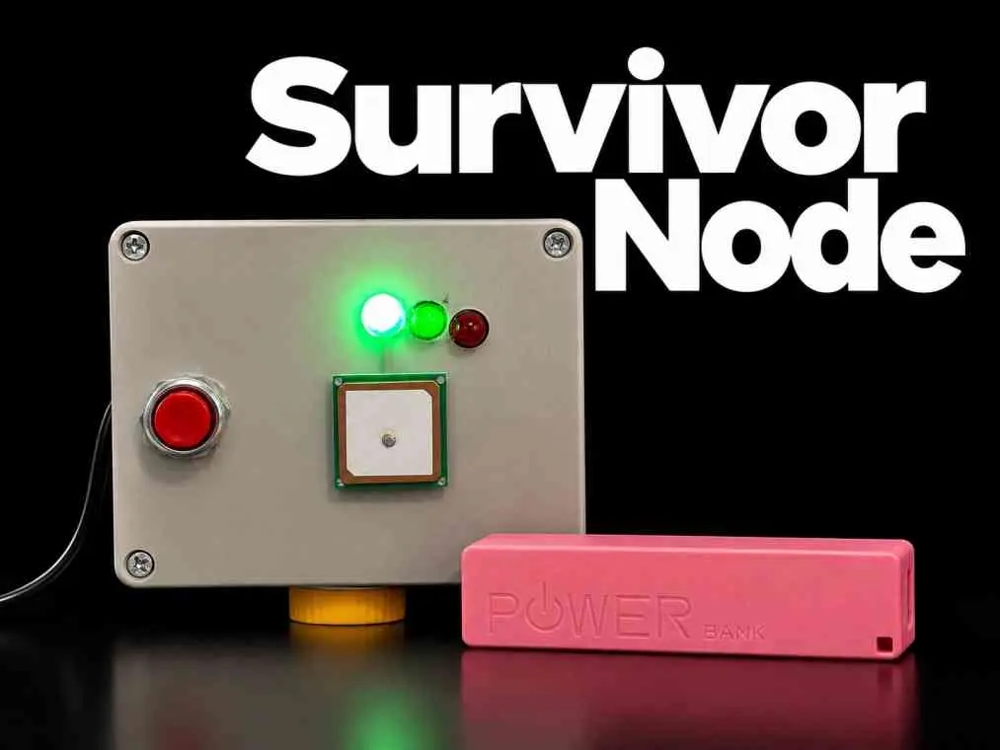
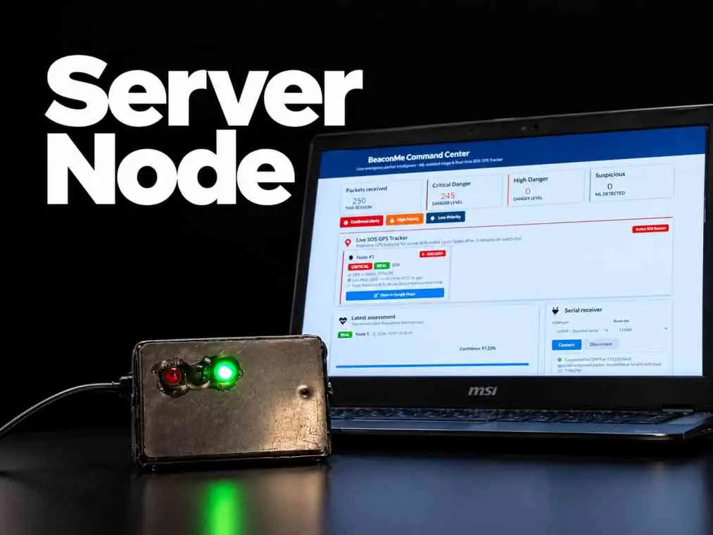
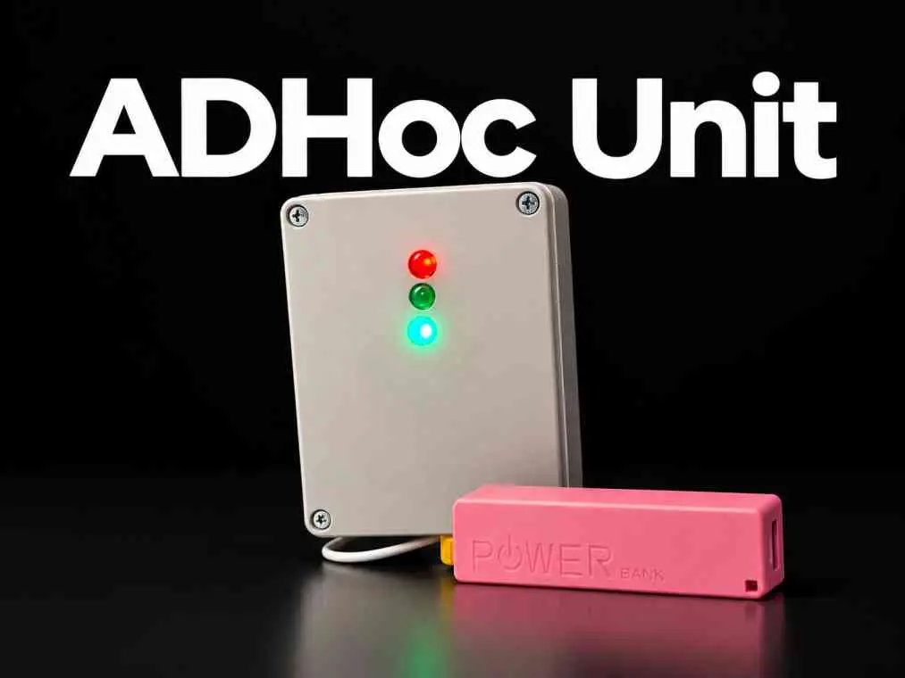
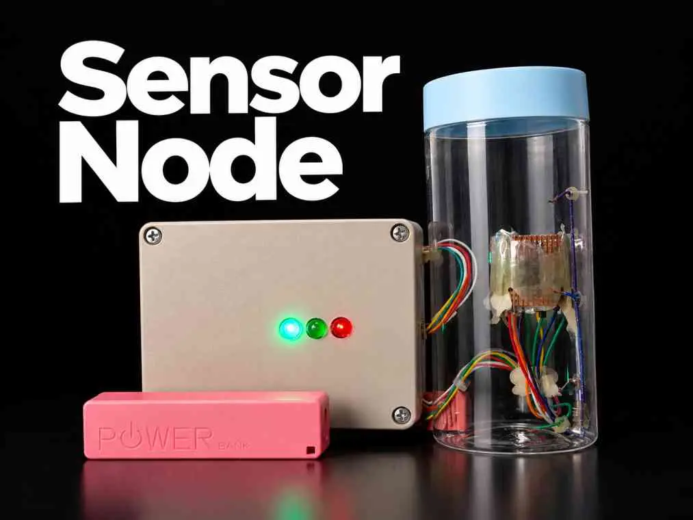
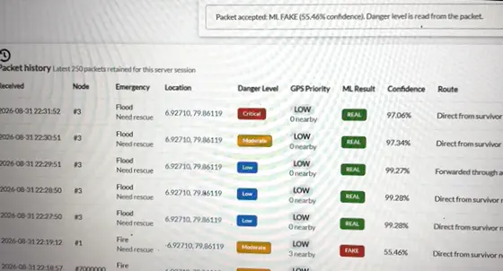

Literature Survey
Existing research shows that standard communication infrastructure fails almost immediately during natural disasters. A 2017 study demonstrated the potential of LoRa for long-range, low-power communication, but primarily for automated sensor networks rather than human-initiated SOS signals. Other studies focus on deployable WiFi or satellite units, which are often too localized, expensive, or require internet backbones that are unavailable during catastrophic events.
Research Gap
Current solutions either require an active mobile network or are purely automated sensors without a way for civilians to report their specific emergencies.
Existing Systems
- Require working smartphones
- No priority sorting for SOS
- Messages too large for efficient radio
- Cannot filter out false alarms
Our Solution
- Works with or without phones (Physical SOS button)
- Three-tier priority classification (Critical, Emergency, Info)
- Custom 19-byte data compression protocol
- AI-driven genuine/false classification using sensor correlation
Research Problem
How can we build a simple, affordable, portable device that allows disaster survivors to send their location and emergency details to rescue authorities — even when all phone networks, internet, and electricity are completely down — and that filters genuine signals from noise to optimize rescue operations?
Research Objectives
Main Objective
Implement a backup communicating network to be used when the main communication system is not available in a disaster situation, to save as much lives as possible.
Sub-objectives
- Create the communication network and relevant devices (Relay stations).
- Implement the ability to send distress signals and current location using the portable RF transmitter.
- Design and implement the data filtering AI model to identify genuine emergency signals and prioritize them.
- Measure flood levels and inform it within the system to provide early warnings and correlate with SOS signals.
Methodology
Our project follows a Design Science Research (DSR) approach, organized into a multi-layer pipeline.





Technologies Used
BeaconMe leverages a lightweight, off-grid technology stack spanning long-range radio hardware, embedded microcontrollers, satellite positioning, machine learning validation, and cross-platform software.
LoRa RF & ESP32
Long-range 868/915 MHz radio communication with ESP32 SoC for mesh logic and Wi-Fi SoftAP.
XGBoost ML
Machine learning classifier to filter out noise, test pings, and false alarms based on sensor correlations.
Flutter
Cross-platform civilian emergency app featuring minimal-tap operation and offline positioning.
Sensors & GPS
u-blox NEO-6M for direct coordinates and ultrasonic sensors for live flood telemetry.